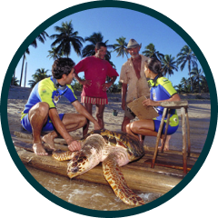
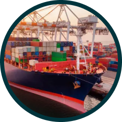

Os oceanos estão ameaçados pela poluição, com ações sem sustentabilidade, colocando em risco a biodiversidade marinha e a subsistência de milhões de pessoas. Daí nasceu a OceanGuard
Saber maisTecnologias e funcionalidades para a nossa solução:
Sensor PH, temperatura e turbidez
Utilizaremos sensores subaquáticos que possam monitorar a qualidade da água, níveis de poluição e a saúde de ecossistemas marinhos. Vamos utilizar o arduino uno inicialmente para conectar sensores de PH, temperatura e turbidez das águas dos oceanos.
Sistema Web Administrativo
Desenvolver um sistema que monitore a qualidade da água, e que agregue e visualize os dados coletados de várias fontes de principal o arduino com sensores de PH e turbidez, trazendo dados em tempo real.
Sistema de dados em python
Utilizaremos o python para receber os dados enviados pelo Arduino, armazená-los em um banco de dados e fornecer uma API para o frontend em tempo real, para fornecer a costeiras, pescadores e quem estiver interassados dados de como está o oceano ou parte dele de onde o arduino receberá os dados.
Objetivos Principais
Concientização
Aumentar a conscientização sobre a importância da saúde dos oceanos e os impactos da poluição marinha
Monitoramento
Implementar sistemas de monitoramento para detectar poluição e mudanças na qualidade da água
Educação
Desenvolver programas educativos para comunidades costeiras sobre práticas sustentáveis
Colaboração
Fomentar a colaboração entre empresas, governos e ONGs para promover ações de conservação marinha
Público Impactado
-

Comunidades Costeiras
As comunidades costeiras dependem diretamente da saúde dos oceanos para sua subsistência e segurança alimentar.
-

Empresas Marítimas
Empresas que operam no mar, como pesca e turismo, serão beneficiadas por um ambiente marinho mais sustentável e monitorado.
-
Governos e ONGs
Governos e organizações não governamentais poderão utilizar os dados e ferramentas para implementar políticas e projetos de conservação marinha.
Benefícios
Melhoria da Saúde dos Oceanos
Redução da poluição e restauração dos ecossistemas marinhos, promovendo um ambiente marinho mais saudável.
Conscientização e Educação
Aumento da conscientização pública sobre a importância dos oceanos e educação sobre práticas sustentáveis.
Sustentabilidade Econômica
Apoio às economias locais através da promoção de práticas de pesca sustentável e turismo ecológico, assim podendo pegar peixes mais saudáveis na pesca.
Dados para Políticas Eficazes
Fornecimento de dados precisos para governos e ONGs, ajudando na criação de políticas e iniciativas de conservação.
Nosso produto no dia a dia
Nossa solução oferece ferramentas e informações essenciais para promover práticas sustentáveis e proteger os recursos marinhos, beneficiando diretamente comunidades costeiras, empresas e o público em geral.
Acessar OceanGuardNossa solução vai ajudar no dia a dia principalmente para ...
Comunidades Costeiras
As comunidades costeiras terão acesso a dados e recursos para melhorar a gestão local dos recursos marinhos, garantindo segurança alimentar e um ambiente mais saudável.
Empresas Marítimas
As empresas de pesca e turismo poderão implementar práticas mais sustentáveis, reduzindo o impacto ambiental e garantindo a viabilidade de suas operações a longo prazo.
Educação e Conscientização
A educação e conscientização do público em geral será aumentada sobre a importância da preservação dos oceanos, promovendo comportamentos mais responsáveis e engajando-se em ações de conservação.